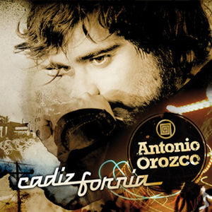

Cadizfornia
 De: La Frikipedia, la enciclopedia extremadamente seria.
De: La Frikipedia, la enciclopedia extremadamente seria.

|
Este artículo necesita ser ilustrado. Busca una afoto en nuestro depósito de imágenes o donde sea y ponla, pero que no sea pr0n, que se cabrea el señor del adSense y nos corta el grifo de los dólare. Y sin dólare no hay servidor...
|
| De la serie Países del planeta tierra:
|
| Cadizfornia
|
|
| Lema: Los que dicen "Lo importante es participar" son unos perdedores
|
Himno: Dreamin' Cadizfornia
|
150px
|
| Capital
|
Kleenexland, al norte de la isla
|
| Mayor ciudad
|
Ciudad Perdida del Callo Malayo, cerca de la mansion de Su Majestad
|
| Lenguas oficiales
|
Camboyano y canillejo
|
| Gobierno
|
Monarquia Absolutista
|
| Su Colocadísima Majestad
|
Luis XIV
|
| Área
|
Mogollón de km2
|
| Población
|
26,5 pelagatos
|
| Moneda
|
lero
|
| Zona horaria
|
España +1-3
|
| Dominio Internet
|
.put
|
| Código telefónico
|
+69
|
| A Antonio Orozco le gusta tanto veranear allí que le ha compuesto un disco entero
|
Cadizfornia (del latín,Isla de isla que pertenece a un jeque-putero ibicenco llamado Camboya.
Gobierno y población
En esta isla hay ayuntamiento, presidido por el putero y aconsejado por sus concejales:
- Madrid: Otro putero, pero este madrileño, que llegó a Cadizfornia para ser concejal de urbanismo y llevarse todos los leros del país. Actualmente se encuentra en Jaulardín de la Torre.
- Bertales: Concejal de origen vasco cuya identidad es desconocida debido a que reside en la isla de al lado, Albaseattle. Es concejal de la ruta del burdel (muy frecuentada por payeses de Sant Miquel i Puig d'en Valls). Se cree que es cagadas.
- Jodido Diogo: Creador del 6en1, un desatascador excelente. Para eso mezcló Osborne y vodka. A este hombre le dieron el título honorífico de borracho de pueblo, que acude a fiestas patronales para beber 6 en 1.
Actualmente Concejal de Hacienda y asuntos interiores(debido a que conoce perfectamente el idioma camboyano)
- Jandrisconsio: Es el clásico orujo y no caer en el suelo hasta pasados 3 segundos.
- Chepi Ramone Chygrynskyy: Hijo de Luis XIV, al que Luis al desheredado el trono por dormirse en las reuniones de concejales y por cortejar con la hija de Corleone (mafioso de Sicilia).
Actualmente Presidente de la industria de coca-cola.
Charles es único debido a su grupo sanguíneo, JB positivo.
En esta isla también habitan putas, borrachos y algun que otro cani.
Deporte nacional
Como toda buena isla tiene un equipo de fútbol(Cadizfornia FC) que ha jugado un partido internacional. Fue ante 5 Mohammeds y ganaron 1-0 debido a que son unos marrulleros.
Su mayor rival son los cacahuetes. Un equipo de 4 acabaos + Jodido Diogo (doblemente acabao debido a sus huesos demasiados engrasaos por el 6en1).
Fauna y flora
La fauna de la isla se compone de:
- Monos Camboyanos.
- Matigoles (del latín, Carluus Matigulensis) Una especie de borracho de San Antonio.
- Guiris
- Mallorquines (muy predominantes en la zona norte de la isla)
A lo que se refiere la flora:
Economía
En esta isla de tan solo 10km d largo por 5km de ancho ostenta el monopolio internacional de numero de fábricas de alcohol por metro cuadrado entre las que encontramos:
- Hierbas Ibizencas
- WKD
- Smorkanoff
- Countreau
- Baileys
- Mezcla de Red Bull con Vodka Rojo fabricado asi de fabrica (es el mas aclamado)
- Whisky: Irlandes,Escoces,Español y el camboyano que es el mejor
- J.B. ( esta fabrica junto con la de coca cola son del marques Charles Chepi )
- Coca Cola con 90º de alcohol (Coca-Cola Gran Reserva)
Turismo
Entre los servicios que pueden encontrarse los turistas hay:
- Campo de golf municipal (donde el jeque luisXIV y sus concejales celebran plenos y deliberan sobre los cambios que pueden realizar en la normativa para hacer de cadizfornia un lugar mejor donde vivir)
- Estación de esqui (situada al norte de la isla en la sierra dels amunts con picos superiores a los 20.000m. de alto donde encontramos todo tipo de pistas desde verdes hasta negras pasando por azules rojas y la mas concurrida por gente de piel de color: la pista para negros. En esta estacion es donde luis XIV pasa los duros inviernos en la casa de campo con sus concejales acompañados por una buena compañia femenina)
- Playas (desde cala corta:con 5m. de largo.Asta cala passa:cuando ves la playa dsde lejos te dan ganas de seguir de lo asquerosa que es asi que pasas de largo. Pasando por ses mimes:esta playa es famosa porque se reunen todo tipo de famosos como LABIOS y porque es obligatorio acer topless.)
- Centros comerciales (corte Camboyanes,Alcampo,carrefour,la sirena,etc.)
- Bolera(lugar de reunion de canis y berracos)
- Mini macro golf (este campo de golf es famoso por que pasas de una pista de minigolf a una en que la separación del principio al hoyo es de 5 km.
- Hoteles (el mas famoso de la isla es el felicia porque a los residentes les practican unas 5 felaciones diarias)
- Hipodromo (todos los resultados de las carreras estan amañados por el concejal de urbanismo "madrid" para no perder ni un eurelio cuando asiste los domingos por la tarde con sus amigos concejales y asi acerse el listillo ganando todas las apuestas)
- Circuito internacional de F1 (este circuito es peculiar por su salto a final de recta donde los coxes vuelan por los aires unos 100m. Es la unica carrera donde los F1 incluyen alas para pasar el obstáculo)
- Y el servicio mas importante es la mansion play boy (donde los concejales pasan sus ajetrados dias y cumplen a raja tabla medio segundo mandamiento)
Religión oficial
Esta isla comparte religión con la de Albaseattle. Ambas tienen una religión única, el Juanitismo, que se basa en 7 mandamientos:
- Amaras a Juanito Maravilla por encima de todo.
- Visitaras al menos 2 puticlubs de la isla al día para que no caiga el prestigio putero de ésta
- Causaras actos bandalicos por las calles todos los dias
- Piropearas a lo berraco almenos a unas 5 tias por ora
- La tasa mínima de alcohol permitida es 5.0% (si tienes menos seras ingresado en un centro de intoxicación masiva con ayuda de sicólogos especializados)
- Rezaras almenos 3 veces al dia en dirección de la tumba de Juanito maravilla
- Y el último y no menos importante: Despreciarás a tu familia por encima de todo y tus amigos de borrachera se convierten en tu única familia.
Cultura y sociedad
El lugar de reunión por excelencia de la isla de canis y berracos es la bolera donde se reunen para ver quien es más tonto y jugar al futbolín hasta quedarse con la muñeca hecha caldo mientras miran como bailan las chicas en la maquina (los tíos sólo ganan para seguir en el sitio de honor que permite ver el culo de las que bailan) el ejemplo más claro de berraco/cani mas habitual en la bolera y allá donde vayas es el señor Manolín.
El LABI: peligro público y privado
Pero toda isla tiene su lado oscuro y en este caso los turistas tienen que tener cuidado cuando vayan solos por las magníficas calles de la isla porque hace unos 16 años más o menos existió una mutación entre el mono camboyano maá popular de la isla(labios) y una humana.De aqui salio el engendro de la isla conocido por LABI.
Su comida favorita son los cacahuetes bañados en chocolate (M&M's) y todo tipo de bebida alcohólica. Este especimen no es peligroso pero atención porque si se lo encuentran les puede soltar un sinfin de jugadas y tácticas de futbol de las que no abriais oido ablar en la vida. No es difícil distinguirlo de un mono o humano normal porque mide entre 2 y 4 metros (mas o menos) y porque siempre va con su gorrita parecida a la del mono de Aladdín.
Historia
En la isla habitaban desde el siglo IV antes de Luis, un ser medio calvo de cabeza con forma de Cacahuete y estatura media llamado Homo Santiens, conocidos vulgarmente como Santis.
Un siglo después llegó a Cadizfornia, un payes nacido en el establo de los burros de Sant Llorenç llamado Conde Spreccio (del griego profundo, con desprecio)
Vino con su hijo, el marques de Cala Conta (padre de Luis XIV) y con 23 putas adquiridas en unos souvenirs de la India.
Más tarde, el marqués de Cala Conta heredó el trono real y mando a hacer la mansión Playboy (originaria de Cadizfornia) y 32 fábricas de alcohol etílico. Más tarde, murió por una sobredósis de hagua.
En ése momento el trono pasó a ser de Luis XIV hasta nuestros días.
Puntos de interés cultural
- Camino de Juanito. (Este camino fue copiado por los gallegos y lo llamaron Eto'o.
- Piramide de Juanito (donde está enterrado el Dios del futbol)
- Estatua homenaje a Luix XIV. En ella, sale Luis montado a caballo con una espada en una mano y la cabeza de Bertales en la otra(cogido por los pelos).
- Campo del Cadizfornia.
- La ruta de los burdeles (dirigida por Bertales). Con un guía excelente, Omar Ramouhni.
- La ruta del jodido (en la que si te encuentras a Diogo, le tienes que invitar a una ronda)
- Museo del porno.
- Museo de cera, en el que salen todos los concejales desnudos con el miembro a tamaño real.
- Las fabricas de alcohol, donde puedes adquirir botellas si eres mayor de 7 años.
- El mercado pages, donde se venden tractores de contrabando robados directamente de la fábrica.
- Casa de veraneo de Antonio Orozco, gran amante de la isla y de sus atracciones turísticas. En ella compuso los temas del disco Cadizfornia él solito sin manos, sin pies y sin
polla dientes (porque intentó comer cacahuetes sin pelarlos, y casi tuvo que ser trasladado urgentemente al hospital de Albaseattle para que le recompusieran los piños, al pobre). Museo de curiosidades entre las que destacan una camiseta sudada y un pelo de ciertas partes del cantante.
- Casa de campo, donde puedes encontrar putas baratas y cocaína a solo 150 leros/gr.
Personas nacidas en la isla
 Antonio Orozco recordando su tierra
Y algún que otro pelagatos
Autor(es):
- Frikiman
- Viento
- Khazike Khashondo
- Azulejos
- Kalec
- Natasha
- Cadizforniaco
- Cadizforniano
- Bertales
- Lunasfingo
Frikipedia 2005-2016, Licencia
GFDL 1.2 - Extraído por FrikiLeaks